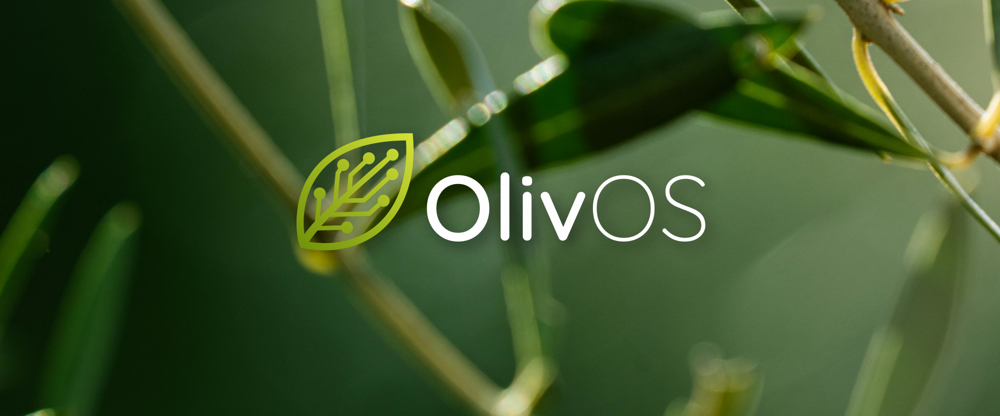
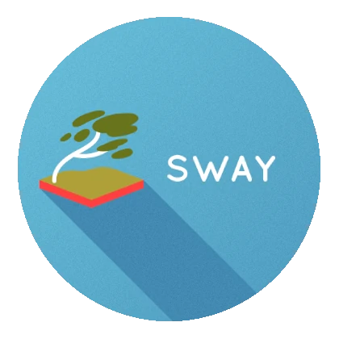
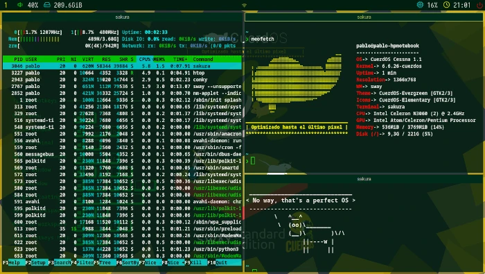
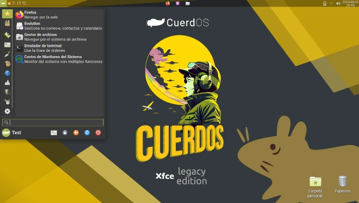

"Optimized to the last pixel."
CuerdOS is a GNU/Linux distribution of spanish origin focused on stability, eficiency and performance on computers of any range, without losing any functionality.
This is not only a derivative with a customized desktop environment, but it has a series of optimizations and performance improvements, including: optimization of active services, improvements in the use of the processor, among many others.
This provides great stability and security, as well as very good flexibility.
Unlike other lightweight distributions, CuerdOS is a system that opts for the avant-garde.

This distribution focuses on offering a great experience with Sway, although it also features Xfce and the Visuals included in other environments.
This is the first version of CuerdOS, called CuerdOS 'Cessna', in case of finding errors or contributing ideas, please contact us via email or telegram. Thank you all for your collaboration and support.!
You can view the changelogs and bugs reported for different releases here.
| System Requirements | |
|---|---|
| Minimum | Recommended |
| +1GB of RAM | 2GB of RAM |
| x86_64 1,00 Ghz CPU | |
| 8.5GB Disk storage | 8.5GB Disk Storage on SSD |

This edition features CuerdOS as the default environment, including the Sway window manager.

Originally planned as Xfce, CuerdOS was first discarded but has now returned as a dedicated edition.
*Before testing the system, we strongly recommend that you upgrade to the latest version, as it will have all the new features and bugs fixed.*
The CuerdOS logo is published under license CC-BY-SA-4.0